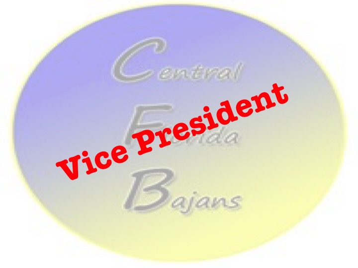

The Coalition for the Barbados Association of Central Florida (CBAOCF) Elections 2017
The Coalition for the Barbados Association of Central Florida (CBAOCF) elections will be held on 19th August 2017. The Election Committee is soliciting nominations from current members during the months of May, June and July 2017 for positions on the Board of Directors for the Association. Eligible canidates should:
be in good financial standing at the time of their nomination;
have a good understanding of the Association's By-Laws;
be prepared to give a short presentation on why he or she is standing for the position on the Board of Directors
Descriptions of the positions available on the Board of Directors for the Association are outlined below.
|
President and Chairman of the Board of Directors
Presides over all regular and special association meetings;
Announces all business coming before the Association according to its prescribed order of business;
Recognizes all members who are entitled to the floor;
Enforces rules of debate and decorum within the Association. |
|  |
Vice-President
Supports the President;
Assumes the duties of the President in his or her absence. |
|
Secretary
In the absence of the President and Vice President calls the Association meetings to order and presides over the meetings;
Maintains a current record of membership;
Maintains records containing Bylaws, Minutes, Special rules, Amendments, and Committee reports;
Provides minutes and records to members upon request. |
|
Correspondence Secretary
Notifies members of all regular and special meetings in a timely manner;
Receives and reports on all correspondence to the Association;
Collaborates with the Secretary in replying to correspondence;
Manages providing guest speakers for monthly meetings. |
|
Treasurer
Assumes the role of caretaker of the Association funds;
Receives and deposits all Association dues and funds into the bank account approved by the Association;
Disperses funds upon written authorization of the Board of Directors;
Makes monthly financial reports to the Association;
Signs all checks for disbursement and withdrawals from accounts with countersignature by President or Vice President;
Maintains records of Association receipts and disbursements and make such records available for periodic inspection by the Board of Directors. |
|
Assistant Treasurer
Assists the Treasurer in carrying out his or her duties;
Performs other duties from time to time directed by the Board of Directors |
For more information on Elections and the electorial process, please contact info@cfbajans.com